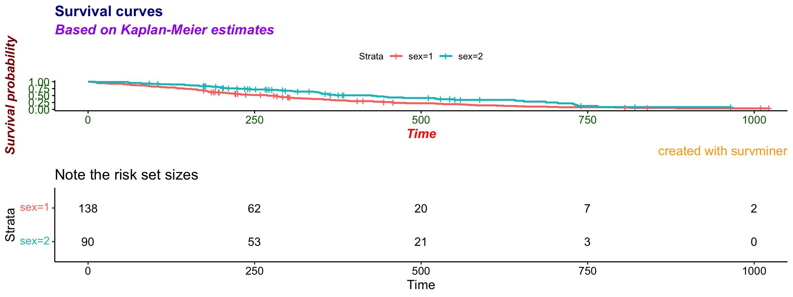
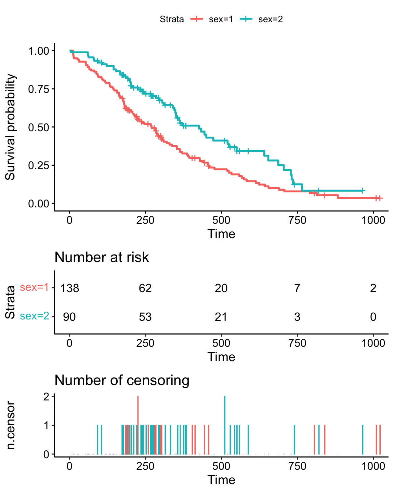
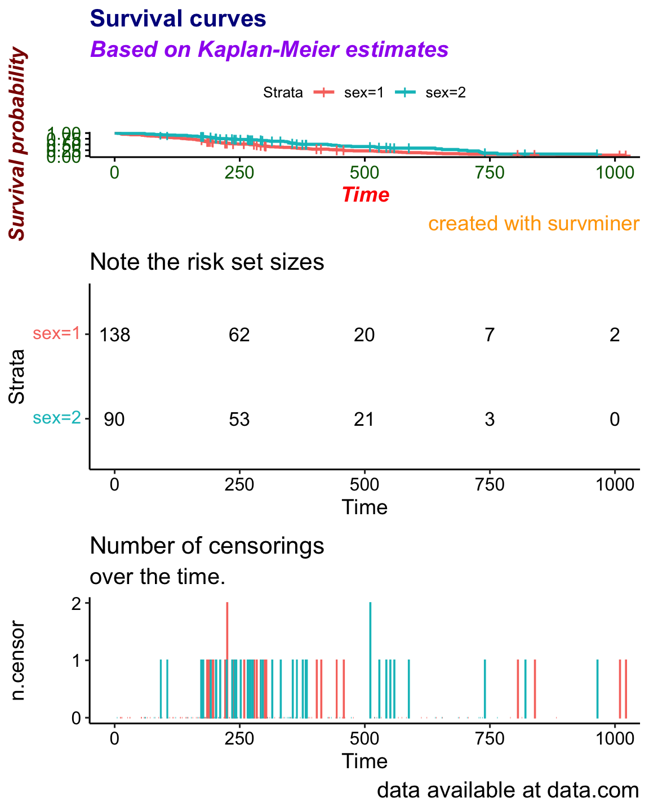

Playing with fonts and texts
Marcin Kosinski
library("survminer")This vignette covers changes between versions 0.2.4 and 0.2.5 for additional texts and fonts customization enabled for subtitles and captions.
Survival plot
Basic
Compare the basic plot
library("survival")
fit<- survfit(Surv(time, status) ~ sex, data = lung)
# Drawing survival curves
ggsurvplot(fit, data = lung)
Customized
with the plot where every possible text on a plot is specified
ggsurvplot(fit, data = lung,
title = "Survival curves", subtitle = "Based on Kaplan-Meier estimates",
caption = "created with survminer",
font.title = c(16, "bold", "darkblue"),
font.subtitle = c(15, "bold.italic", "purple"),
font.caption = c(14, "plain", "orange"),
font.x = c(14, "bold.italic", "red"),
font.y = c(14, "bold.italic", "darkred"),
font.tickslab = c(12, "plain", "darkgreen"))
Risk table
Now allow risk.table to be displayed.

Customized
with the plot where every possible text on a plot and table is specified
ggsurvplot(fit, data = lung,
title = "Survival curves", subtitle = "Based on Kaplan-Meier estimates",
caption = "created with survminer",
font.title = c(16, "bold", "darkblue"),
font.subtitle = c(15, "bold.italic", "purple"),
font.caption = c(14, "plain", "orange"),
font.x = c(14, "bold.italic", "red"),
font.y = c(14, "bold.italic", "darkred"),
font.tickslab = c(12, "plain", "darkgreen"),
########## risk table #########,
risk.table = TRUE,
risk.table.title = "Note the risk set sizes",
risk.table.subtitle = "and remember about censoring.",
risk.table.caption = "source code: website.com",
risk.table.height = 0.45)
ncens plot
Finally, allow ncens.plot to be displayed.
Basic
Please compare basic plot with a risk table and a ncens plot
ggsurvplot(fit, data = lung, risk.table = TRUE, ncensor.plot = TRUE)
Customized
with the full customization
ggsurvplot(fit, data = lung,
title = "Survival curves", subtitle = "Based on Kaplan-Meier estimates",
caption = "created with survminer",
font.title = c(16, "bold", "darkblue"),
font.subtitle = c(15, "bold.italic", "purple"),
font.caption = c(14, "plain", "orange"),
font.x = c(14, "bold.italic", "red"),
font.y = c(14, "bold.italic", "darkred"),
font.tickslab = c(12, "plain", "darkgreen"),
########## risk table #########,
risk.table = TRUE,
risk.table.title = "Note the risk set sizes",
risk.table.subtitle = "and remember about censoring.",
risk.table.caption = "source code: website.com",
risk.table.height = 0.35,
ncensor.plot = TRUE,
ncensor.plot.title = "Number of censorings",
ncensor.plot.subtitle = "over the time.",
ncensor.plot.caption = "data available at data.com",
ncensor.plot.height = 0.35)
Notes
- Note that you will probably need to extend the default risk table height and ncens plot height after those customizations.
- Distinct between
titleandsubtitlefor thecurve_plotandrisk.table.titleandrisk.table.subtitlefor thetable/ncens.plot.titleandncens.plot.subtitlefor thencens. - Fonts are set simultaneously for the
curve_plot, for thetableand for thencensparts. This might change in the future.